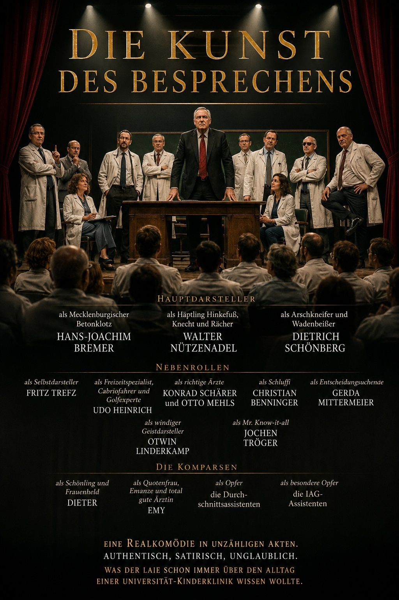

Die Heidelberger Universitätskinderklinik war damals bereits in mehrere Kliniken gegliedert. Neben der Allgemeinen Pädiatrie gab es eigenständige Kliniken für Neonatologie, Kardiologie und Neuropädiatrie. Dennoch bestimmte die Allgemeine Pädiatrie den Alltag der Kinderklinik. Sie war das eigentliche Machtzentrum.
Als ich im Oktober 1987 meinen Dienst an der Universitätskinderklinik Heidelberg antrat, hatte ich einen Arbeitsvertrag, der es mir erlaubte, wissenschaftlich und klinisch zu gleichen Teilen tätig zu sein. Eine Woche im Labor, die folgende Woche in der Klinik.
Als ich meinen Dienst in der Klinik begann, wurde ich pflichtgemäß in der Mittagsbesprechung im Hörsaal vorgestellt. Allgemeines Tischeklopfen und zunächst einmal Freundlichkeit. Das sollte sich ändern. Schon bald merkte ich, dass ich beinahe täglich ein Schauspiel erlebte, das mich an meine Zeit in der gymnasialen Oberstufe in Bernkastel erinnerte – eine merkwürdige Mischung aus Schule und akademischem Laienschauspiel.
Dazu muss ich zunächst die Strukturen und die Darsteller dieses Schauspiels vorstellen. Die Klinik war in vier Bereiche gegliedert. An der Spitze stand der geschäftsführende Direktor und Leiter der Klinik für Allgemeine Pädiatrie mit den Sektionen Stoffwechsel, Nephrologie, Endokrinologie sowie Hämatologie und Onkologie. Daneben gab es die Klinik für Neuropädiatrie, die zu meiner Zeit unbesetzt war und kommissarisch vom Leiter der Allgemeinen Pädiatrie geführt wurde. Hinzu kamen die Klinik für Pädiatrische Kardiologie, die Klinik für Neonatologie sowie der selbständige Bereich Pädiatrische Radiologie.
Die Allgemeine Pädiatrie war zu Beginn meiner Tätigkeit unbesetzt, wurde aber schon bald mit Prof. Hans-Joachim Bremer besetzt, einem gebürtigen Mecklenburger, der aus der Kinderklinik Düsseldorf nach Heidelberg berufen worden war. Ihm zur Seite stand Professor Walter Nützenadel, ebenfalls ein ehemaliges Ostgewächs, das sich nach Heidelberg verirrt hatte. Nützenadel leitete die Klinik kommissarisch bis zu Bremers Berufung. Fortan war er nur noch Bremers Knecht fürs Grobe. Wir nannten ihn wegen seines humpelnden Gangs „Häuptling Hinkefuß“.
Die Sektion Stoffwechsel wurde von Fritz Trefz geleitet, einem extrovertierten Selbstdarsteller mit ausgeprägtem Selbstbewusstsein. In den Startlöchern für seine Nachfolge stand damals der Altassistent Georg Hoffmann.
Die Sektion Nephrologie wurde von Prof. Konrad Schärer geleitet, einem gebürtigen Schweizer und aus meiner Sicht dem eigentlichen Star der Heidelberger Kinderklinik. Er war ein Pionier, der die pädiatrische Nephrologie wie kein anderer in Deutschland geprägt hatte. Entsprechend souverän trat er auf und beteiligte sich kaum an der Selbstinszenierung im Hörsaal. Ihm zur Seite stand sein Oberarzt Otto Mehls, ein angenehmer Mensch ohne Allüren. Dann gab es noch den Altassistenten Burkhard Tönshoff, einen gut aussehenden ehemaligen IAG. Er würde später Stellvertreter des Bremer-Nachfolgers Georg Hoffmann werden.
Es folgte die Sektion Endokrinologie unter Prof. Dietrich Schönberg, einem griesgrämigen älteren Herrn. Wenn er anwesend war, gefiel er sich darin, andere vor versammelter Mannschaft bloßzustellen. Oberärztlich vertreten wurde er von dem gut aussehenden, dauergebräunten Freizeitspezialisten, Coupéfahrer und Golfexperten Udo Heinrich. Nach Schönbergs Ausscheiden sollte Heinrich Sektionsleiter werden und der damalige Assistent Markus Bettendorf sein Stellvertreter.
Schließlich die Sektion Hämatologie und Onkologie, der ich zugeordnet war. Leiter war Rolf Ludwig, der später die Klinik verließ und Bischof wurde. Sein Altassistent war Klaus-Michael Debatin. Er sollte Ludwig später beerben und – so wie ich – Leiter einer Universitätskinderklinik werden.
Die Klinik für Neuropädiatrie war zu meiner Zeit unbesetzt und wurde oberärztlich von Christian Benninger und Gerda Mittermaier geführt. Benninger war ein gutmeinender, bärtiger Schluffi, der die harte Arbeit nicht erfunden hatte. Mittermaier war so halbwegs das Gegenteil: bemüht, aber völlig ineffektiv. Entscheidungen zu treffen oder gar eine Abteilung zu führen gehörte nicht zu ihren Stärken.
Die Pädiatrische Kardiologie wurde von Prof. Dieter Wolf geleitet. Er war alte Schule und der Meinung, der Rest der Pädiatrie sei im Grunde Randgeschehen und habe dem eigentlich wichtigen Fach, der Kardiologie, zuzuarbeiten. An den Inszenierungen im Hörsaal beteiligte er sich kaum, denn meistens war er gar nicht da. Mittags ging er lieber schwimmen.
Seine Stationsvisiten waren allerdings grotesk und seinem damaligen Oberarzt gegenüber geradezu entwürdigend. Wolf saß am Schreibtisch, ihm gegenüber seine Stationeuse. Sein Oberarzt Herbert Ulmer musste das Ganze stehend über sich ergehen lassen. Das Absurde daran: Als Ulmer später Wolfs Nachfolger wurde, führte er dasselbe Schauspiel mit seinem eigenen Oberarzt Klaus Schmitt auf.
Die Klinik für Neonatologie wurde von Prof. Otwin Linderkamp geleitet. Er war aus München nach Heidelberg berufen worden und gehörte zu den Ersten, die die Besuchszeiten für Eltern von Frühgeborenen abschafften. Man kannte ihn auch unter dem Namen „Windy Lindi“, denn gelegentlich war er einfach mit dem Wind verschwunden und nicht auffindbar. Nach einem sich anbahnenden Skandal wurde er praktisch über Nacht entsorgt. Als Mensch war er angenehm und keiner, der sich an den Selbstinszenierungen des Heidelberger Laientheaters beteiligte. Dafür umso mehr seine beiden Oberärzte Gonne Kühl und Eugen Zilow. Gonne Kühl war eloquent und souverän. Zilow ebenfalls eloquent, zugleich aber maßlos von sich selbst überzeugt – die Miniausgabe von Nützenadel.
Schließlich gab es noch die angeschlossene, aber selbständige Klinik für Pädiatrische Radiologie unter der Leitung von Prof. Jochen Tröger. Fachlich war er hervorragend, zugleich aber geradezu extrem von sich und seinem Können überzeugt. Meist hielt er sich aus den Inszenierungen im Hörsaal heraus. Wenn er sich jedoch einmischte, dann richtig – und gelegentlich auch auf eine Art, die ins Unfaire abdriftete.
Nun zum täglichen Schauspiel, das sich während der unzähligen Besprechungen beobachten ließ. Natürlich sind Besprechungen ein unverzichtbares Instrument. Alle an der Betreuung der Patienten Beteiligten müssen so informiert werden, dass die Versorgung optimal funktioniert und keine Komplikationen durch Informationsdefizite entstehen.

In Heidelberg dienten Besprechungen – jedenfalls nach meiner persönlichen Wahrnehmung – jedoch noch einem weiteren Zweck. Die von Bremer vermutlich in bester Absicht als pädagogische Fortbildung mit erzieherischem Anspruch geschaffenen Veranstaltungen orientierten sich häufig nicht an den tatsächlichen Erfordernissen des Klinikalltags. So gab es langatmige Visiten auf den Stationen, die sich in Anwesenheit eines riesigen Personenkreises regelmäßig zu akademischen Diskussionen entwickelten. Die Pflegekräfte hätten sich in dieser Zeit vermutlich lieber um ihre Patienten gekümmert. Stattdessen mussten sie die verlorene Zeit später mit Überstunden ausgleichen.
Während dieser Visiten versuchte Bremer mit seinem nahezu enzyklopädischen Detailwissen über seltene Stoffwechselkrankheiten zu glänzen. Die Entourage lauschte beflissen. Knecht Nützenadel bewies seine Unterwürfigkeit, indem er allem zustimmte, was Bremer sagte. Widerspruch anderer Beteiligter wurde von ihm oft mit persönlichen Angriffen im Keim erstickt.
Die morgendliche Übergabe vom Nacht- an den Tagdienst fand um acht Uhr im Hörsaal statt, allerdings in deutlich kleinerem Kreis. Anwesend waren immer Bremer und Nützenadel, meist auch Linderkamp oder seine Vertreter. Es fehlten die Kardiologen. Sie waren verhindert, denn sie mussten sich schließlich um das wichtigste Organ kümmern und betrachteten sich deshalb als Elite der akademischen Pädiatrie. So jedenfalls meine damalige Deutung, die ich später an anderer Stelle bestätigt fand. Vielleicht hatten sie aber auch einfach keine Zeit.
Die Übergabe war nach etwa fünfzehn Minuten beendet. Da nur wenige Personen anwesend waren, entfielen die langatmigen akademischen Pseudodiskussionen.
Die Mittagsbesprechung war dagegen der eigentliche Höhepunkt des Tages. Alle strömten in den Hörsaal. Anwesenheitspflicht bestand für sämtliche Stationsärzte, denn sie mussten über die Entwicklungen auf ihren Stationen berichten. Fehlte einer, ließ Bremer ihn anrufen. Bis zu seinem Eintreffen mussten alle anderen warten. Für den Zuspätkommenden war das eine Lektion – und eine öffentliche Zurschaustellung.
Dann begann das tägliche akademische Laientheater. Die eigentliche Frage lautete nicht, wie man Patienten am besten versorgte, sondern wie man sich vor der versammelten Mannschaft als Wissender präsentieren und gleichzeitig andere möglichst klein aussehen lassen konnte.
Besonders einfach war das für die in den vorderen Reihen Sitzenden – Bremer, Nützenadel, Schönberg und deren Vertreter. Vorgeführt wurden die Anfänger in den hinteren Reihen. Selbst die Sitzordnung hatte Symbolcharakter. Vorne saßen die Etablierten, hinten die Anfänger. Immerhin konnte man dem Affront räumlich noch etwas entgegensetzen.
Die Anfänger versuchten ihrerseits, den Angriffen durch möglichst knappe Informationen auszuweichen. Meist hieß es: „Keine Veränderung.“ Oder: „Nichts Neues.“
Nützenadel war allerdings hervorragend informiert. Er hatte die Krankenakten gelesen und wusste meist schon vorher, wo die Schwachstellen lagen. Mit sichtlichem Vergnügen bohrte er nach, deckte Lücken in der Informationsweitergabe auf und konnte sich anschließend vor Bremer und dem übrigen Publikum als derjenige präsentieren, der alles wusste. Die Art, wie Nützenadel dabei vorging, hatte etwas Schulmeisterliches. Wahrscheinlich hing das auch mit seiner eigenen Biographie zusammen. Er verachtete alle Neuen, insbesondere diejenigen, die sich wissenschaftlich weitergebildet hatten. Sie würden nicht dort enden, wo er gelandet war – als ewiger Stellvertreter. Sie würden die Bremers der nächsten Generation werden. Jedenfalls war das damals meine Interpretation.
Aber weshalb war die Stimmung dieser Mittagsbesprechungen insgesamt so unerquicklich? Ich glaube, das hatte viel mit Bremer zu tun. Er war kein schlechter Mensch. Im Gegenteil. Er gehörte zu den gerechtesten Menschen, die ich kennenlernte. Jedenfalls war er kein Opportunist wie manche andere Ärzte, denen ich später begegnete. Er war jedoch auch keine Führungspersönlichkeit, die ihre Mannschaft mit Begeisterung mitreißen konnte. Nicht der Typ Jürgen Klopp, sondern eher Jupp Derwall – um es fußballerisch auszudrücken. Vielleicht sogar noch etwas norddeutscher. Ein Betonklotz aus dem Norden. So jemand war außerstande, die Atmosphäre in einer Mannschaft positiv zu beeinflussen oder Missgunst gar nicht erst entstehen zu lassen.
Bremer war geradezu besessen vom Besprechen. In seiner Anfangszeit hielt er zusätzlich am Nachmittag noch eine weitere Besprechung mit den Ärzten seiner Abteilung ab. Alle mussten erscheinen. Währenddessen blieb die Stationsarbeit liegen. Aus meiner Sicht war diese Besprechung vollkommen überflüssig und an den Bedürfnissen von Stationen und Patienten vorbeiorganisiert. Wolkenkuckucksheim.
Trotzdem habe ich aus all diesen Besprechungen enorm viel mitgenommen. Zum einen lernte ich Pädiatrie in ihrer ganzen Breite kennen. Zum anderen lernte ich, wie man eine Klinik besser nicht organisiert. Oder anders formuliert: Besprechungen sind unverzichtbar. Sie müssen aber auf das notwendige Maß beschränkt bleiben.